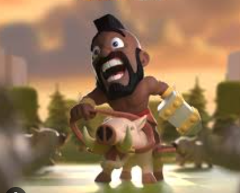

There once was a ferios hog rider but now his hog is fat and he works at a bar. His wife never wanted him to ride hogs again but he still miss abit more every day. So after his shift he goes home to feed, bath his hog and he needed a big night of rest for day tommrow. Tommrow is when all the Ridaa come to the bar cause in two day all of the ridaa go to battle. That night Hog rider had a dream of all his great times when he went to battle. The morning, hog rider goes to clock in at the bar He setting up all of the table... once he finish goes behind the counter waiting for all the hogs to show. Ten minutes later they arive the bar get loud and full of laughter Joking how there gonna DESTROY!!!! The other in battle, hog rider serving elixar juice to all the ridaa. Then one of his old rida friend comes up to him and said. "why dont you ride any more you were one of the bravest ridaa to exist". "I dont know I think I have found my place here at a bar". His friend says"I hope you change your mind". That just might have changes his mind that sat in hog ridaa mind all day. Eventually hog ridaa get home decide you know what I am gonna ride again. Then his hog and him start training they got back into shape better then ever. So when the ridaa went to battle they joined in and lead the hog ridaa to battle

From DearPlayer by Unkown